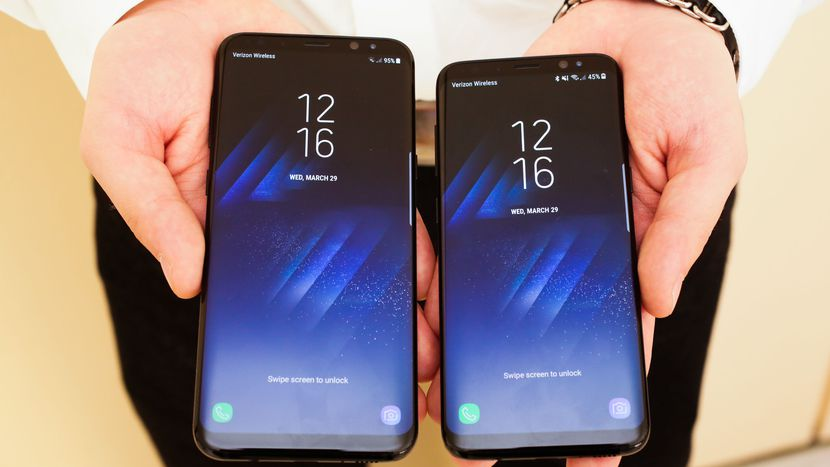

Les Galaxy S8 ont réussi à prendre la première place aux Galaxy S7 pour devenir les meilleurs téléphones au monde selon le classement et les tests extensifs de Consumer Reports, l’association de consommateur très respectée aux Etats Unis. Une nouvelle fois, Samsung se fait remarquer par son appareil photo, ses écrans et son autonomie.
Chaque année, le bal des nouveaux smartphones prend place en début d’année pour le haut de gamme, avant de se calmer quelque peu sur l’été pour reprendre de plus belle à la fin de l’année. Et il semble que nous ayons le droit à une coutume désormais. En effet, l’année dernière, les Galaxy S7 et S7 Edge avaient été élus meilleurs smartphones au monde par Consumer Reports, l’association de consommateur américaine équivalente à l’UFC Que Choisir qui fait subir des tests extensifs aux nombreux smartphones disponibles sur le marché.
Slimane Hassani Simplon © Roubaix 2017